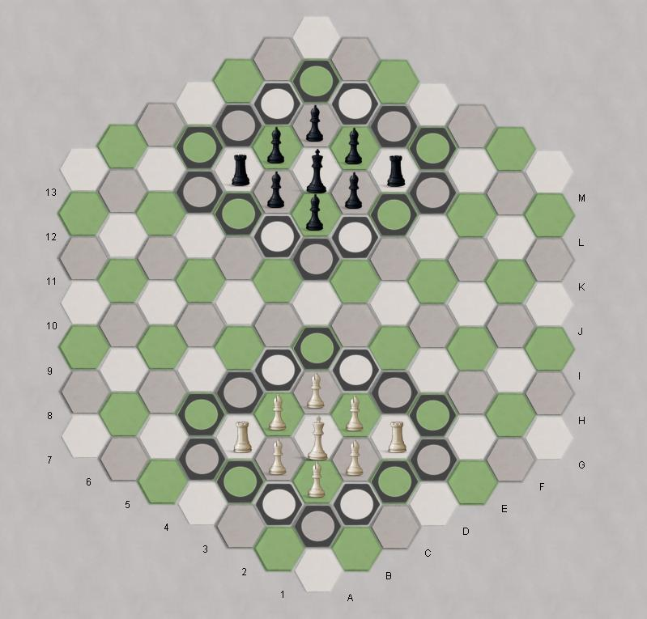

Chess |
|
Checkers |
| Register |
Get the application |
King's Color(a chess variant) King's color is a wild Chess variant, played on a 3-color hex-hex board. The king is confined to a 3x3 "castle", and the other pieces are either bishops or rooks, which promote to queens. Capturing is only possible within the castle or castle walls, and (the big twist in this variant) when the king moves to a different color, all the rooks become bishops, and all the bishops on the new king's color become rooks. It's a wild ride! Read the complete rules here. Robots: They seem pretty good, but I haven't properly got my head around the game yet, so maybe I'm just weak. |

|
| King's Color rankings |
King's Color at
BoardGameGeek |
| King's Color win/loss database | rules for Kings Color |
|
|
Site Map |
Go to BoardSpace.net home page |